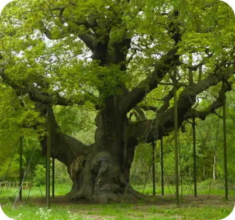

Nottingham
Pourquoi avoir choisi ce lieu ?
J’ai fait un voyage en Angleterre il y a 4 ans et nous logions dans des familles à Nottingham. Nous avons beaucoup visité la ville et je l’ai adoré, alors je souhaite vous la présenter.
Les lieux similaires à Nottingham classés chronologiquement des plus au moins récents.
Ville située en Angleterre, elle s'appelait à l’origine Snotingeham.
The Council House
Situé au cœur de la ville, c'est un monument récent construit en 1927. Il existe un Council House jumeau à Birmingham très semblable par son dôme où se situe le cocher. Devant ce bâtiment se trouve le Old Market Square qui est une grand place, en été il y a des jets d’eau.
Statue Robin de Bois
Ville culte de de l’héros qui vole au riche pour aider les pauvres dans le besoin. À Nottingham se trouve Sherwood Forest, soit la forêt de Robin des Bois et sa statue.
Je conseille de voir la forêt en été (c’est sûrement plus sympa quand l’arbre est fleuri). On y est allé en février et c’est bien triste de voir ce grand arbre avec uniquement des branches.
Le château de Nottingham
Il se trouve à proximité de la statue de Robin des Bois en ville, il est très imposant par ses tours rondes. À l’origine ce château était un château en bois fondé par Guillaume le Conquérant en 1067. Mais il a été détruit et reconstruit par un château de pierre par Henri Ier en 1200.
Nottingham est une ville pleine d’histoire essentiellement ancrée dans le Moyen-Âge, les bâtiments peuvent en témoigner.
À voir aussi
Et si on voyageait ?

Moyens de transports que vous connaissez et empruntez probablement tous les jours. Comment ont-ils évolué ?
en lire plus